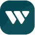

<!DOCTYPE html>
<html lang="en">
  <head>
    <meta charset="UTF-8" />
    <meta name="viewport" content="width=device-width, initial-scale=1.0" />
    <link rel="stylesheet" href="css/main.css" />
    <link rel="stylesheet" href="css/satoshi.css" />
    <title>Lake's Portfolio</title>
  </head>
</html>
<div class="mw-lrg">
  <div class="header">
    
    <nav>
      <ul>
        <li class="active-nav">Work</li>
        <li><a href="#">About</a></li>
        <li>Resume</li>
      </ul>
    </nav>
  </div>
</div>

<div class="mw-sm mt-6 resume">
  <h1>Lake Cam</h1>
  <div class="row-nsp hl">
    <p>thelakecam@gmail.com</p>
    <p>604–314–6869</p>
    <p>linkedin.com/in/lakecam</p>
  </div>
  <div class="mt-2">
    <h3>Experience</h3>
    <div class="row-nsp mt-2 align-start">
      
      <div class="column">
        <div class="job-info">
          <p class="teal bold">User Experience Designer</p>
          <p class="medium light-grey">Westland Insurance</p>
          <p class="small light-grey">Sep 2022-Present</p>
        </div>
        <div>
          <p class="mt-1">
            Spearheading the organizational design system as the sole UX
            Designer in my team, my role here has shifted and adapted from being
            initially hired as an intern to fix the Figma files, to now playing
            a more strategic role in determining feature sets, it’s been a blast
            for my first ‘real job’ in corporate design!
          </p>
        </div>
      </div>
    </div>
  </div>
</div>
